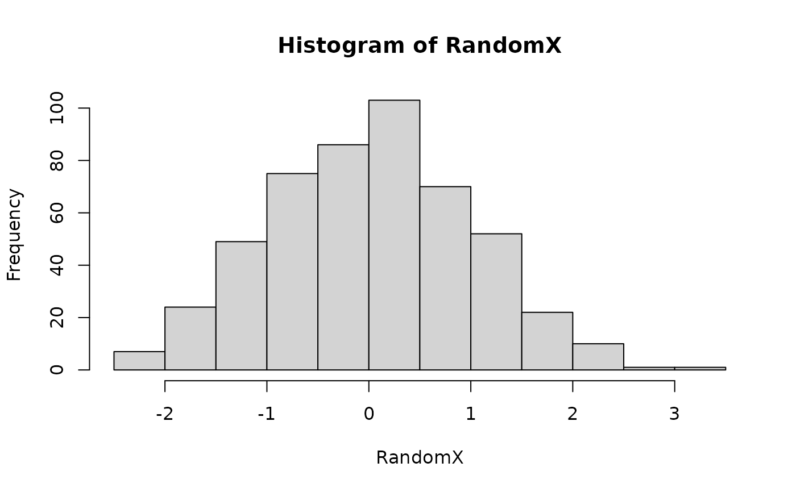

VI.RdA set of methods that extract the most relevant information from a graphical object (or implied set of graphical objects) and display the interpreted results in text or HTML form.
The method includes representations of summary methods that are more suitable for blind users. For example, the method for a data.frame uses a single line for each variable instead of the normal column layout used by the summary method.
Describe(x, VI=FALSE, ...)
VI(x, Describe=FALSE, ...)
# S3 method for histogram
VI(x, Describe=FALSE, ...)
# S3 method for histogram
Describe(x, VI=FALSE, ...)
# S3 method for aov
VI(x, Describe=FALSE, ...)
# S3 method for htest
VI(x, Describe=FALSE, digits = getOption("digits"), ...)
# S3 method for lm
VI(x, Describe=FALSE, ...)any R object
Should the other function be called at the same time
number of decimal places to show
other arguments, currently ignored
This is the general help page for the VI() functionality. Specific help pages will be created if the ability to alter the outcome through user input warrants. See below for more detail on these.
Describe() is for explaining how a given type of graph appears to the sighted world and is intended for use by blind people who do not know how that graph looks. There is room to add hints for displaying the graphs in a more visually appealing manner. In contrast, VI() is intended to extract the specific details for the particular graph or output concerned.
Further methods can be written by users (blind or sighted). Please submit to the package maintainer for possible inclusion in subsequent releases of the package.
This will vary according to the needs of vision impaired users and the specific objects that need to be interpreted.
In general, the output from VI() is a series of text strings printed in the console/terminal window in addition to the embedded command's normal functionality. The VI.lm() method is the first to move away from this idea and use a process that builds on the UniDesc() function. In this case, the method creates an R markdown file and compiles it into HTML. The HTML document is opened if the R session is interactive.
The VI() functions do not create objects as do many R commands. Manipulations on the objects created by regular R expressions will need those regular expressions issued in addition to those of the VI family of functions. The VI.lm() method does create objects in the current workspace and then deletes them once the HTML document is compiled.
The Describe() family of functions do create an object for passing onto other functions.
The VI.lm method fails if you use the one line VI(lm(...)) even if the model is named using VI(Model1 <- lm(...)). It does work if two explicit commands are used. For example Model1 = lm(...) followed by VI(Model1).
RandomX=rnorm(500)
PlottedFig=hist(RandomX)

VI(PlottedFig)
#> This is a histogram, with the title: Histogram of RandomX
#> "RandomX" is marked on the x-axis.
#> Tick marks for the x-axis are at: -3, -2, -1, 0, 1, 2, and 3
#> There are a total of 500 elements for this variable.
#> Tick marks for the y-axis are at: 0, 20, 40, 60, 80, and 100
#> It has 13 bins with equal widths, starting at -3.5 and ending at 3 .
#> The mids and counts for the bins are:
#> mid = -3.25 count = 1
#> mid = -2.75 count = 2
#> mid = -2.25 count = 5
#> mid = -1.75 count = 27
#> mid = -1.25 count = 46
#> mid = -0.75 count = 66
#> mid = -0.25 count = 104
#> mid = 0.25 count = 93
#> mid = 0.75 count = 70
#> mid = 1.25 count = 57
#> mid = 1.75 count = 21
#> mid = 2.25 count = 7
#> mid = 2.75 count = 1
Describe(PlottedFig)
#> A histogram created using the base graphics package.
#>
#> General description: A histogram uses rectangles to represent the counts or relative frequencies of observations falling in each subrange of the numeric variable being investigated. The rectangles are standing side by side with their bottom end at the zero mark of the vertical axis. The widths of the rectangles are usually constant, but this can be altered by the user. A sighted person uses the heights and therefore the areas of the rectangles to help determine the overall shape of the distribution, the presence of gaps in the data, and any outliers that might be present.
#> As with most graphs created by the base graphics package, the axes do not join at the bottom left corner and are separated from the area where the data are being plotted. Tick marks are automatically chosen for the data, and the axes may not extend past the ends of variables being plotted.The vertical axis for frequency always starts at zero.
#> R normally plots a graph in a square window. This can be altered; the way this is done depends heavily on the method being used to create the graph. See the help on win.graph() or x11() for the graphs made in an interactive session or part of an R script; png(), pdf() or postscript() for specific file formats being created; or, use fig.height and fig.width arguments in your R markdown documents.
#>
#> R hints: If you intend to make a tactile version of a histogram, you may find it useful to alter the aspect ratio so that the histogram is wider than it is tall.
#>